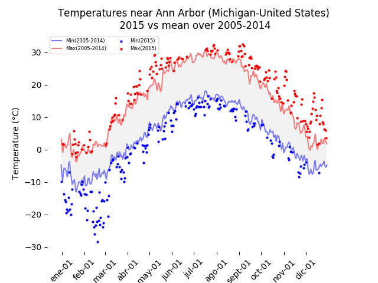

Applied
Plotting
This is a showcase of my skills plotting with matplotlib.

These examples are part of the assignments I did in the "Applied Plotting, Charting & Data Representation in Python" course by University of Michigan on Coursera. Link to the certificate.
The first plot shows how temperatures have varied near Ann Arbor (Michigan - United States) in 2015 vs 2005-2014. An average of the values between 2005 and 2014 is represented by the shaded area between the red and blue lines (maximum and minimum) the points represent temperatures of the year 2015 that exceed the average of the years 2005-2014.
This second plot applies some of the concepts explained in the paper
"Ferreira, N., Fisher, D., & Konig, A. C. (2014, April). [Sample-oriented
task-driven visualizations: allowing users to make better, more confident decisions.]
In Proceedings of the SIGCHI Conference on Human Factors in Computing Systems (pp. 571-580).
(Video)
In this paper the authors describe the challenges users face when trying to
make judgements about probabilistic data generated through samples. As an example,
they look at a bar chart of four years of data (replicated below in Figure 1).
Each year has a y-axis value, which is derived from a sample of a larger dataset.
For instance, the first value might be the number votes in a given district or riding for 1992,
with the average being around 33,000. On top of this is plotted the 95% confidence interval
for the mean.
The result is an interactive plot, don't miss seeing the code!

In this example, it is intended to show how a simple data can
be plotted using the principles of Cairo, improving various aspects of the plot.
See the lecture "The Truthful Art (alberto Cairo)".
This visualization was concerned with answering the question
of How the number of followers of the main branches of religion
varied in relation to the population in the last 30 years.
'thearda.com' was scraped for data concerning the region Ann Arbor
and the last 30 years of data. Any new tradition of news religion
bodies was dropped from the analysis in order to provide a more level
comparison between the traditions. A ratio between the sum of the
Adherents grouped by the traditions and the population was plotted
to help the reader identify any major trends in the adherents ratio.
The plot indicates that, in general, all religions have a decrease
in relation to the size of the population. Except for 'other' where
the new religions are classified showing an increased rate. More
information should be taken into account to draw conclusions,
since Ann Arbor is a university city, with 33% of its employment
in education services.